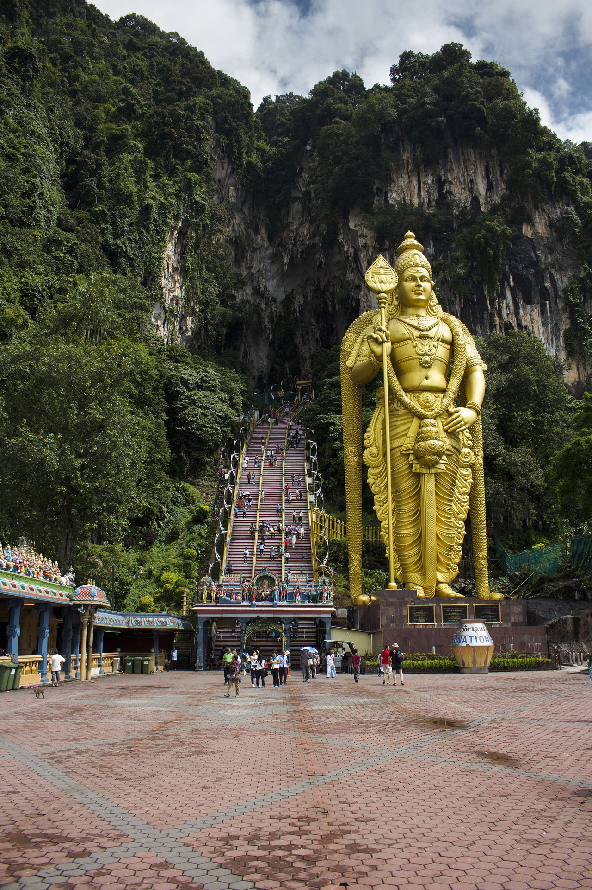
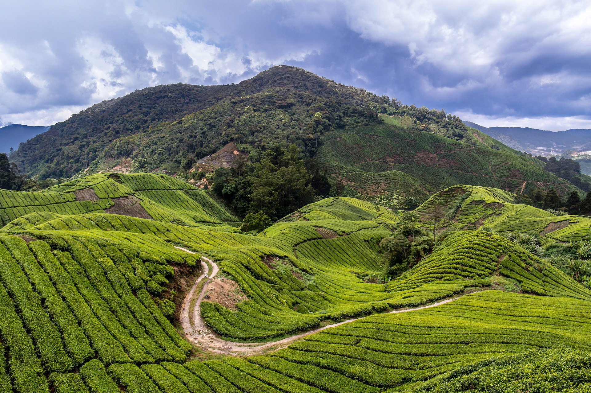
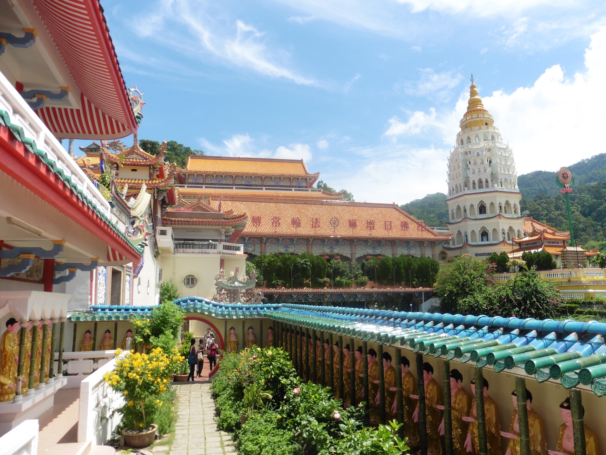

Nuestro viaje comienza allí donde confluyen los ríos Klang y Gombak, Kuala Lumpur. Después de un recorrido por la ciudad que nos permite ver las famosas Torres Petronas y la plaza de la Independencia, nos detendremos para visitar el edificio del sultán Abdul Samad y la Mezquita Jamek. Por la tarde, viajaremos al norte para adentrarnos en las Cuevas de Batu.

Cuevas Batu.
Al segundo día, continuaremos más al norte hasta llegar a las Cameron Highlands, un hermoso lugar caracterizado por extensas plantaciones de té.

Plantaciones de té.
Al día siguiente, continuaremos nuestro viaje hacia el norte hasta la ciudad de Georgetown, en la provincia de Penang. Por la tarde, cruzaremos el Belum Rainforest, bosque rico en especies exóticas, y descansaremos en alguna de las bellísimas playas de la costa este del país. Los siguientes días viajaremos hacia el sur recorriendo la costa. Finalmente, el último día, pasearemos a lo largo del río Malacca, en la ciudad que le da nombre, para finalmente regresar a Kuala Lumpur por la tarde y tomar el avión de regreso a casa.
Al día siguiente, continuaremos nuestro viaje hacia el norte hasta la ciudad de Georgetown, en la provincia de Penang. Por la tarde, cruzaremos el Belum Rainforest, bosque rico en especies exóticas, y descansaremos en alguna de las bellísimas playas de la costa este del país. Los siguientes días viajaremos hacia el sur recorriendo la costa. Finalmente, el último día, pasearemos a lo largo del río Malacca, en la ciudad que le da nombre, para finalmente regresar a Kuala Lumpur por la tarde y tomar el avión de regreso a casa.

Palacio del sultán ¿?